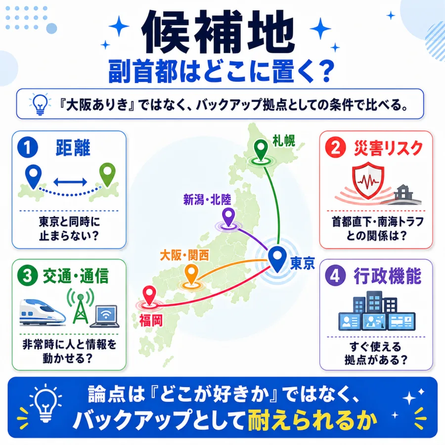
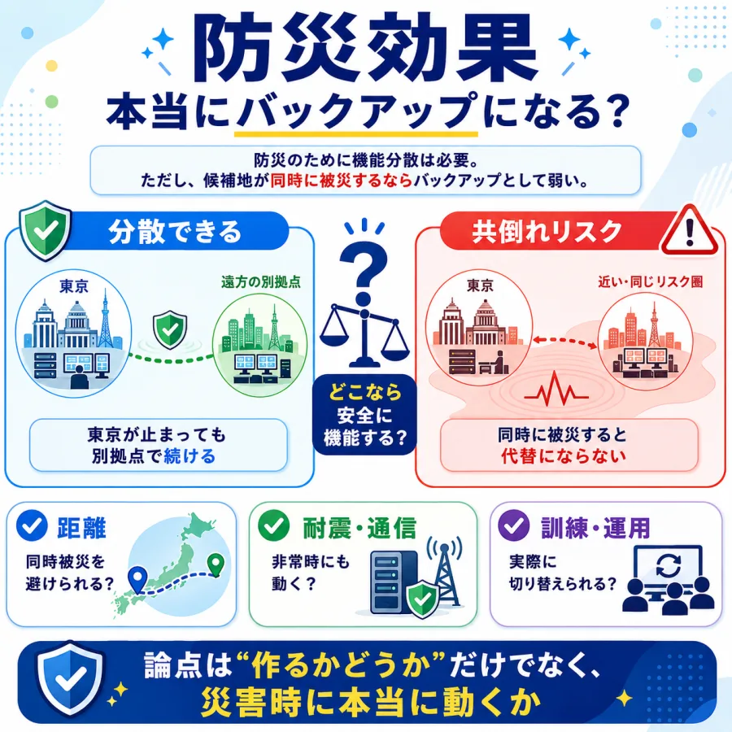

定義・中身
副首都と呼ぶだけではなく、どの機能を移すのか、誰が判断するのか、どう動かすのかが問われています。
副首都、本当に必要？ 場所は大阪でいい？
SNS投稿292件のうち2D分類済み255件（うち意見229件）を、AIが6つの論点に整理。世論調査ではなく、反応サンプルの論点整理です。
副首都論点は「大阪を副首都にするか」だけではありません。まずは、何を移すのか、どこに置くのか、本当に災害時に機能するのか。SNS上の賛否も、この3つの問いのどこを重く見るかで分かれています。
副首都と呼ぶだけではなく、どの機能を移すのか、誰が判断するのか、どう動かすのかが問われています。

「大阪ありき」ではなく、距離・災害リスク・交通通信・行政機能でバックアップ拠点として耐えられるかを比べる論点です。

機能分散は必要でも、同時被災のリスクがある場所では代替にならない可能性があります。
読み方: 図解で全体像をつかんでから、次の投票で「自分が一番気になる設計の論点」を選んでください。
2026年7月、与党・日本維新の会・チームみらいの修正合意により、首都機能のバックアップ都市「副首都」を政令で指定できるようにする法案が衆院通過目前となりました。大阪を軸に検討が進む一方、「大阪ありき」批判や制度設計の不透明さへの疑問も広がっています。
1あなたが最も気になる論点をタップ （全2問）
※ 世論調査ではありません。投票は匿名で集計され、サーバーに保存されます。
※ 世論調査ではありません。
図解で全体像をつかんだ後、田村結衣（都市政策研究員）と大野信子（元市職員・市民活動家）の会話で、SNS上に多い論点を具体的に読みます。タップで拡大。
※ この漫画はSNS上の代表的な意見をもとに構成したフィクションです。
中心の「副首都法案」を6つの論点セクターが囲みます。扇の大きさは投稿数、中心からの距離は感情の熱量（外側ほど激しい）、点の色はスタンス（緑=肯定的 / 赤=否定的 / 灰=中立）。点をクリックすると元のXポストを開きます。

最多の論点。行政学者が指摘した「生煮え」という言葉が拡散し、「副首都の定義が法案に書かれていない」「基本方針や政令の前に指定するのは、家の設計前に契約させるようなもの」という制度批判が中心です。感情的な罵倒より、手続き論・立法論からの冷静な批判が多いのが特徴です。
「南海トラフで東京と共倒れになる大阪はない」という地理的リスク論から、福岡・新潟・北海道・リニア沿線など対案が飛び交う論点です。中立が31件と最も多く、法案への賛否とは独立した「どこがいい？」談義として盛り上がっています。怒りではなく地図を広げて語る、このテーマで最も建設的なゾーンです。
このテーマで最も感情温度が高い論点。「副首都法案は大阪都構想の隠れ蓑」「維新の利権のための法案」という不信が中心で、附則の「都」への名称変更手続きが疑念に拍車をかけています。一方で「大阪ありきで何が悪い。提唱し続けてきたのは維新だけ」という真っ向からの反論もあり、維新への評価がそのまま賛否を分けています。
賛成6・反対11・中立9と、賛否が正面からぶつかる唯一の論点です。興味深いのは、両陣営とも「防災」を根拠にしていること。賛成派は「首都直下地震に備えて一刻も早く機能分散を」、反対派は「南海トラフは首都直下と連動する。大阪では共倒れだ」と、同じ災害リスクから正反対の結論を導いています。
「兆円単位の費用がかかるのに試算が示されていない」「副首都になれば住民税が上がるのでは」という財政批判の論点です。国会で費用を問われて「現時点では分からない」と答弁されたことが火に油を注ぎました。少数派からは「整備新幹線も五輪も、大型プロジェクトは基本方針を決めてから予算を積むのが普通」という手続き擁護もあります。
件数は最少ですが感情温度は2番目に高い論点。「消費税減税は先送りなのに副首都法案は会期延長までして通すのか」という、生活実感からの怒りが中心です。法案の中身ではなく「なぜ今これなのか」を問うており、修正合意に加わったチームみらいへの失望の声も含まれます。
副首都法案は、首都・東京の機能が大規模災害などで損なわれた場合に備え、バックアップ機能を担う「副首都」を政令で指定できるようにする法案です。日本維新の会が長年掲げてきた構想で、2026年7月、与党とチームみらいの修正合意により衆院通過が目前となりました。国会の会期も、この法案の成立を狙って延長が調整されています。
推進する立場からは「首都直下地震や南海トラフへの備えとして機能分散は不可欠」「東京一極集中を是正し多極成長型の国家をつくる一歩」という主張があります。一方で、法案には副首都の定義や統治体制、費用の枠組みが具体的に書かれておらず、行政学者からも「生煮え」との指摘が出ています。また大阪を軸に検討が進むことから「住民投票で否決された大阪都構想の実現が本当の狙いではないか」という不信も根強くあります。
SNS上の反応は反対・慎重が多数ですが、その中身は「そもそも不要」「中身が決まっていない」「場所が大阪なのが問題」「今やることではない」と論点ごとに大きく異なります。どの論点を重視するかで、同じ「反対」でも風景がまったく違って見えるテーマです。
強く反対64件＋慎重74件。賛成側は19件（概ね賛成16・強く賛成3）にとどまり、中立・態度不明が98件。
候補地に言及した78件のうち、大阪NG52件・他候補地推奨20件。大阪を支持する声は6件と少数。
論点別の平均熱量は都構想・維新が1.16で最高。優先順位1.07が続き、候補地0.55が最も冷静。
| 定義・中身 | 51 |
|---|---|
| 候補地 | 49 |
| 都構想・維新 | 49 |
| 防災・災害 | 26 |
| その他 | 19 |
| 費用・財源 | 18 |
| 優先順位 | 15 |
| 合計（意見・論点分類済み） | 227 |
| 強く反対 (-2) | 64 |
|---|---|
| 慎重 (-1) | 74 |
| 中立 (0) | 98 |
| 概ね賛成 (+1) | 16 |
| 強く賛成 (+2) | 3 |
| 大阪は不適 (-2) | 52 |
|---|---|
| 他候補地を推奨 (-1) | 20 |
| 言及なし (0) | 177 |
| 大阪で概ねよい (+1) | 4 |
| 大阪を強く支持 (+2) | 2 |
| 選んだ論点 | マーカーが置かれるセクター | マーカーの色 |
|---|---|---|
| 定義・中身 | 定義・中身 | 賛成=緑 / どちらでもない=灰 / 反対=赤 |
| 候補地 | 候補地 | |
| 都構想・維新 | 都構想・維新 | |
| 防災・災害 | 防災・災害 | |
| 費用・財源 | 費用・財源 | |
| 優先順位 | 優先順位 | |
| その他・わからない | その他 |